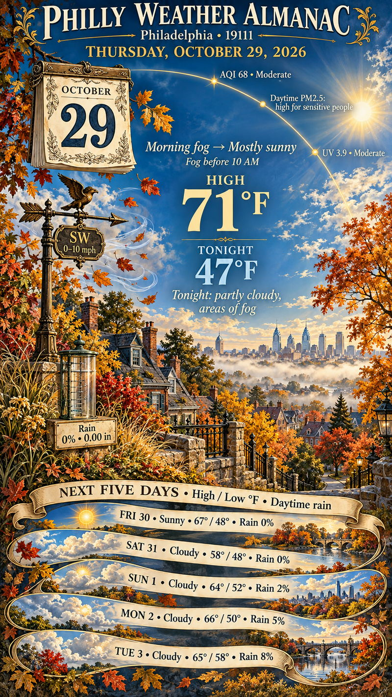

Tropical weather watch
NHC advisories
Hurricane tracker
Atlantic, eastern & central Pacific · Official NOAA / NHC guidance
Connecting to NOAA…
Hourly NOAA infrared mosaic; imagery can lag observations by several hours. Forecast controls move the storm positions; the satellite image stays at the time shown.
Explore the forecast
All forecast positions
Past trackForecastUncertainty coneFormation area
Philly Weather Almanac
Illustrated Philly 19111 forecast snapshot; printed numbers do not update with the live forecast above.
